Jimmy Gardner Four sculptures, one per scenario. Height is time: each strand is one chair across a single afternoon. Shown as 3D-printed exhibition prints; each is also cast in bronze to order. Images: renderings of the bronze edition.
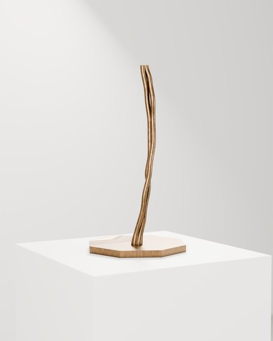
1
Sun-Worshippers , 2026Les Adorateurs du soleil
3D-printed PLA
Two chairs follow the sun round the Grand Bassin, two until six.
PLA €500 · Bronze €3,200
Enquire →
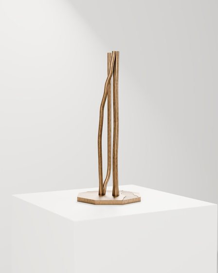
2
The Reader , 2026Le Lecteur
3D-printed PLA
A reader barely moves while a restless pair drifts to the gravel's edge.
PLA €500 · Bronze €3,200
Enquire →
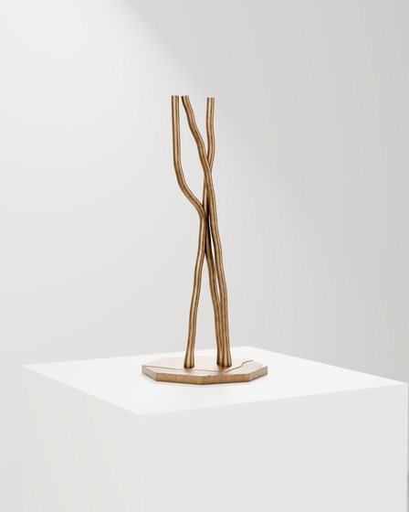
3
Lover's Spat , 2026Scène de ménage
3D-printed PLA
Two chairs meet at mid-height; one storms off, a third is dragged in.
PLA €500 · Bronze €3,200
Enquire →
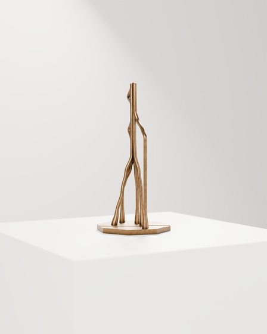
4
The Gathering , 2026Le Rassemblement
3D-printed PLA
Four chairs plait into one column; a fifth crosses the path to join them.
PLA €500 · Bronze €3,200
Enquire →
Wayne Pate Works on paper on the brief merging of sitter and chair, drawing on the posted bills and wall art of Paris. “Une chaise vous attend.”
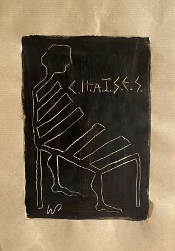
5
Rendez-vous avec une chaise No. 1 , 2026Acrylic scratching on brown laid paper
“The chair supports your moment of contemplation.”
€450
Enquire →
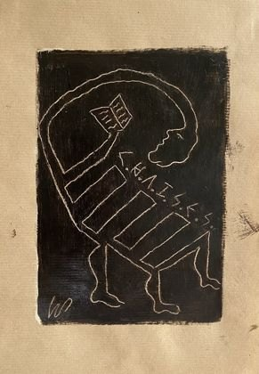
6
Rendez-vous avec une chaise No. 2 , 2026Acrylic scratching on brown laid paper
“The chair is just as enraptured as the reader.”
€450
Enquire →
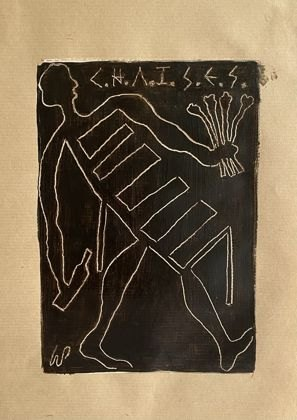
7
Rendez-vous avec une chaise No. 3 , 2026Acrylic scratching on brown laid paper
“The chair anxiously awaits the outcome. Will there be an encore?”
€450
Enquire →
Charlotte Tampol A diptych on the energy the chairs hold from the people who move them: before and after.
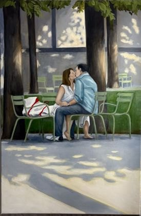
8
Reliquary of Touch (Moment One) , 2026Acrylic and oil on canvas
A couple's chairs turned face to face, knees and chair legs touching.
€2,500 · €4,000 for the pair
Enquire →
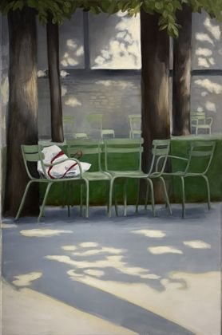
9
Reliquary of Touch (Moment Two) , 2026Acrylic and oil on canvas
The couple gone, the chairs still embrace; a purse is left on one seat.
€2,500 · €4,000 for the pair
Enquire →
Quinn Lewis Life drawings, made in the garden in July, of the arrangements visitors leave behind, fixed by their shadows. In the Kinetic Scrolls, a roller chain moves drawn figures across a painted scene so viewers compose their own.
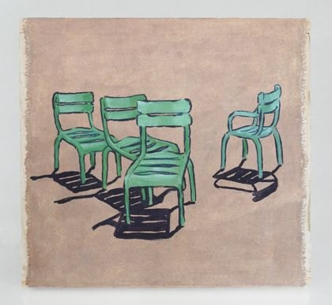
10
Kinetic Scroll No. 1 , 2026Wood, linseed oil paint, oil on canvas, graphite on muslin, poly-mesh, roller chain
Painted scene shown: four green chairs grouped, one apart.
€3,000
Enquire →
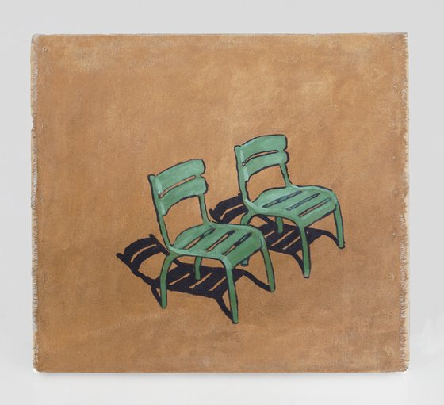
11
Kinetic Scroll No. 2 , 2026Wood, linseed oil paint, oil on canvas, graphite on muslin, poly-mesh, roller chain
Painted scene shown: two chairs side by side on an ochre ground.
€3,000
Enquire →
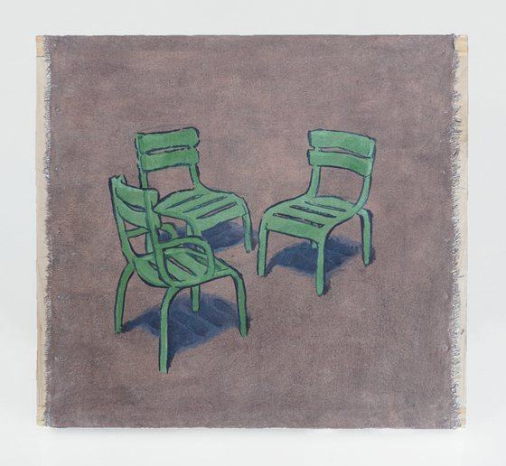
12
Kinetic Scroll No. 3 , 2026Wood, linseed oil paint, oil on canvas, graphite on muslin, poly-mesh, roller chain
Painted scene shown: three chairs on a violet-grey ground.
€3,000
Enquire →
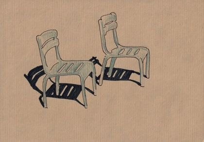
13
Chairs Under Sun No. 1 , 2026Ink and coloured pencil on kraft paper
Two chairs, one pulled forward, in hard striped shadow.
€200
Enquire →
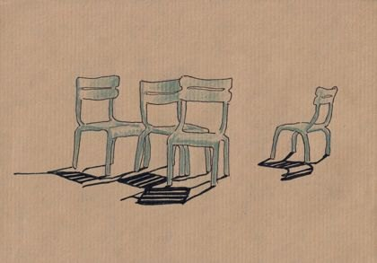
14
Chairs Under Sun No. 2 , 2026Ink and coloured pencil on kraft paper
Three chairs in a row, a fourth set apart.
€200
Enquire →
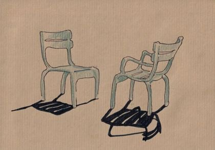
15
Chairs Under Sun No. 3 , 2026Ink and coloured pencil on kraft paper
A side chair and an armchair angled toward each other.
€200
Enquire →
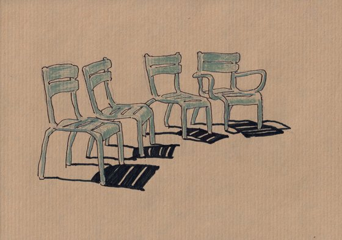
16
Chairs Under Sun No. 4 , 2026Ink and coloured pencil on kraft paper
Five chairs in a loose line, shadows falling right.
€200
Enquire →
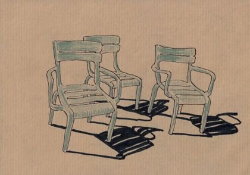
17
Chairs Under Sun No. 5 , 2026Ink and coloured pencil on kraft paper
Three chairs, one an armchair, in a tight group.
€200
Enquire →
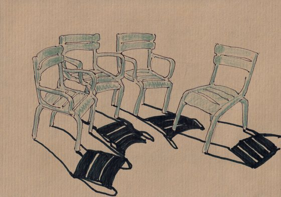
18
Chairs Under Sun No. 6 , 2026Ink and coloured pencil on kraft paper
Four chairs gathered in a ring, one turned away.
€200
Enquire →
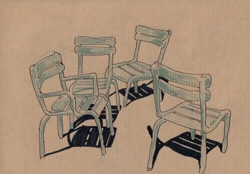
19
Chairs Under Sun No. 7 , 2026Ink and coloured pencil on kraft paper
Four chairs pulled into a close circle.
€200
Enquire →
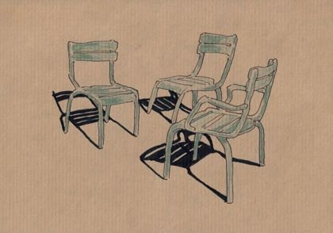
20
Chairs Under Sun No. 8 , 2026Ink and coloured pencil on kraft paper
Three chairs drawn together around an armchair.
€200
Enquire →
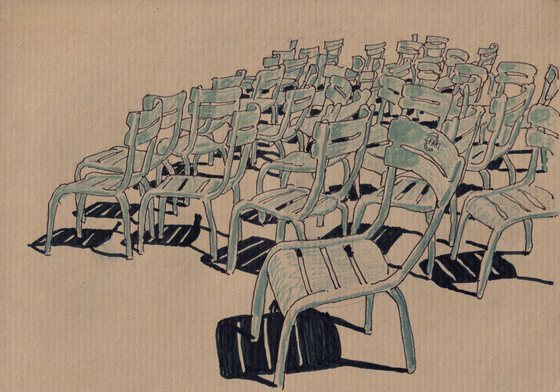
21
Chairs Under Sun No. 9 , 2026Ink and coloured pencil on kraft paper
A dense field of chairs, the rows lost in the crowd.
€200
Enquire →
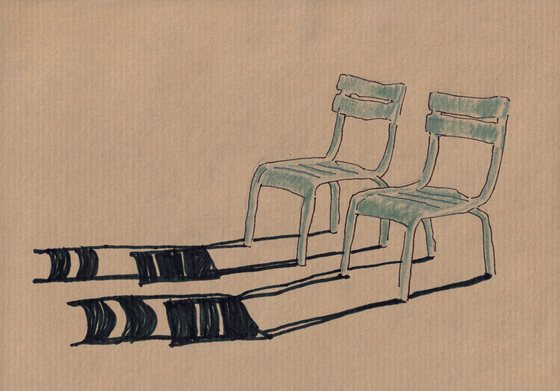
22
Chairs Under Sun No. 10 , 2026Ink and coloured pencil on kraft paper
Two chairs side by side, long shadows stretching left.
€200
Enquire →
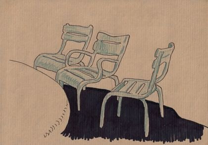
23
Chairs Under Shade No. 1 , 2026Ink and coloured pencil on kraft paper
Three chairs at the edge of a deep pool of shade.
€200
Enquire →
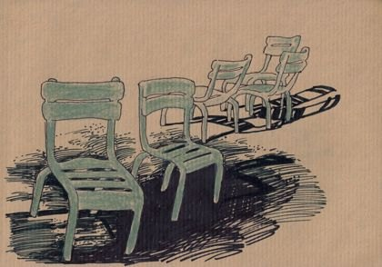
24
Chairs Under Shade No. 2 , 2026Ink and coloured pencil on kraft paper
A pair of chairs in dappled shade, more beyond.
€200
Enquire →
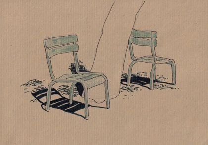
25
Chairs Under Shade No. 3 , 2026Ink and coloured pencil on kraft paper
Two chairs under a tree, the shadow broken by leaves.
€200
Enquire →
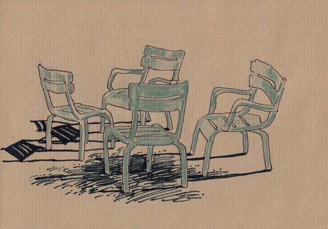
26
Chairs Under Shade No. 4 , 2026Ink and coloured pencil on kraft paper
Four chairs gathered under foliage.
€200
Enquire →
Jessica Anne Schwartz In 2023 Jessica Anne Schwartz made the Luxembourg's Sénat chairs a fixed listening post: her Jardin du Luxembourg Synaesthesia Drawings transcribe the garden's soundscape — children at play, birdsong, wind and rain — in sumi ink, walnut ink, mica and gouache on Murillo paper. Twelve drawings from the series.
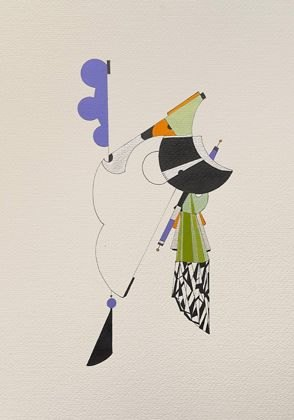
27
Jardin du Luxembourg Synaesthesia Drawing #1 , 2023Sumi ink, walnut ink, mica and hand-mixed gouache on heirloom Murillo paper
€5,800
Enquire →
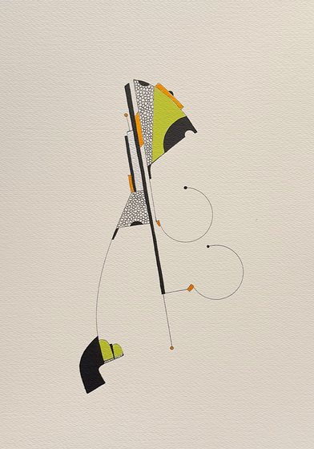
28
Jardin du Luxembourg Synaesthesia Drawing #2 , 2023Sumi ink, walnut ink, mica and hand-mixed gouache on heirloom Murillo paper
€5,800
Enquire →
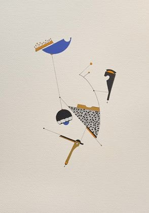
29
Jardin du Luxembourg Synaesthesia Drawing #3 , 2023Sumi ink, walnut ink, mica and hand-mixed gouache on heirloom Murillo paper
€5,800
Enquire →
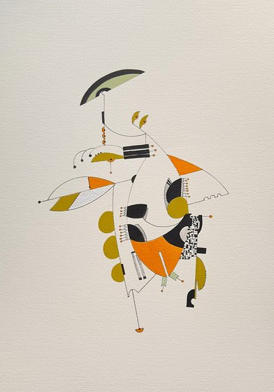
30
Jardin du Luxembourg Synaesthesia Drawing #4 , 2023Sumi ink, walnut ink, mica and hand-mixed gouache on heirloom Murillo paper
€5,800
Enquire →
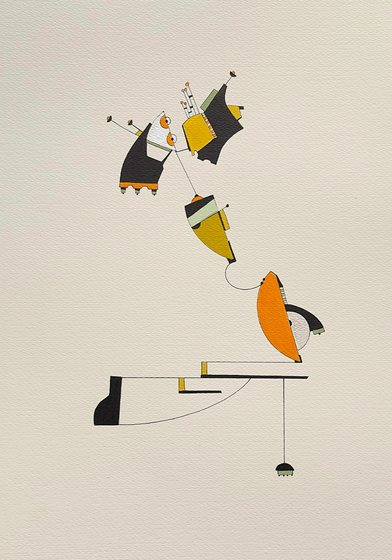
31
Jardin du Luxembourg Synaesthesia Drawing #5 , 2023Sumi ink, walnut ink, mica and hand-mixed gouache on heirloom Murillo paper
€5,800
Enquire →
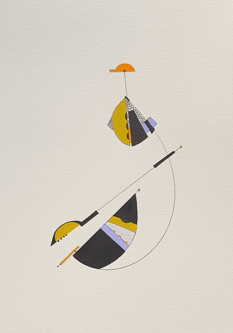
32
Jardin du Luxembourg Synaesthesia Drawing #6 , 2023Sumi ink, walnut ink, mica and hand-mixed gouache on heirloom Murillo paper
€5,800
Enquire →
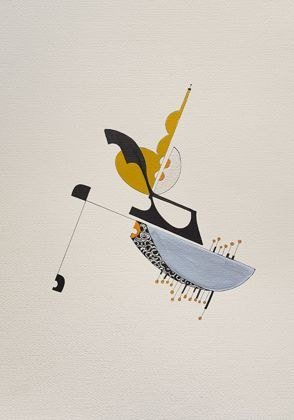
33
Jardin du Luxembourg Synaesthesia Drawing #7 , 2023Sumi ink, walnut ink, mica and hand-mixed gouache on heirloom Murillo paper
€5,800
Enquire →
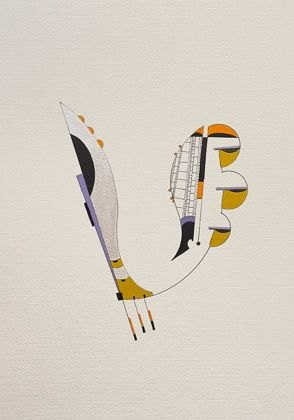
34
Jardin du Luxembourg Synaesthesia Drawing #8 , 2023Sumi ink, walnut ink, mica and hand-mixed gouache on heirloom Murillo paper
€5,800
Enquire →
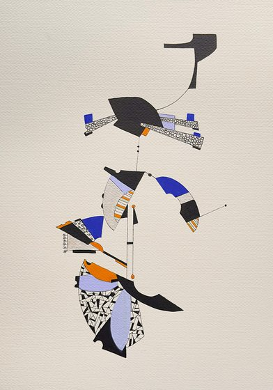
35
Jardin du Luxembourg Synaesthesia Drawing #9 , 2023Sumi ink, walnut ink, mica and hand-mixed gouache on heirloom Murillo paper
€5,800
Enquire →
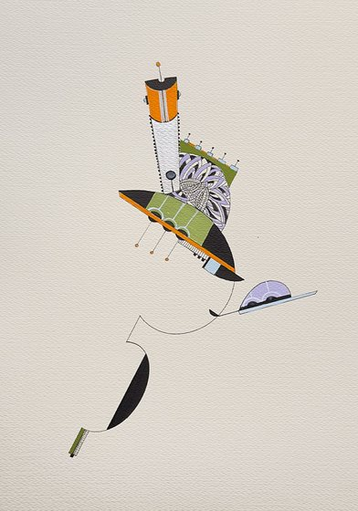
36
Jardin du Luxembourg Synaesthesia Drawing #10 , 2023Sumi ink, walnut ink, mica and hand-mixed gouache on heirloom Murillo paper
€5,800
Enquire →
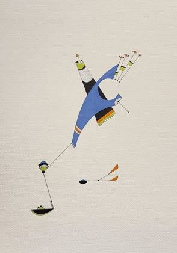
37
Jardin du Luxembourg Synaesthesia Drawing #11 , 2023Sumi ink, walnut ink, mica and hand-mixed gouache on heirloom Murillo paper
€5,800
Enquire →
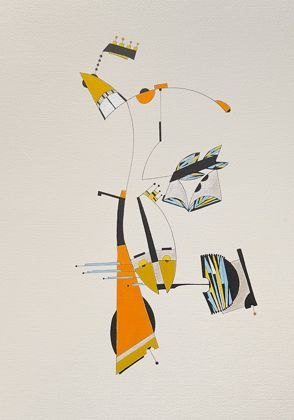
38
Jardin du Luxembourg Synaesthesia Drawing #12 , 2023Sumi ink, walnut ink, mica and hand-mixed gouache on heirloom Murillo paper
€5,800
Enquire →
Allard van Hoorn A used Sénat chair, borrowed from the Jardin du Luxembourg itself, suspended and played with earth magnets and a resonator, so that its steel frame becomes a resonating body. The installation is completed by a Manifesto-Score for the chairs as monuments to gathered time.
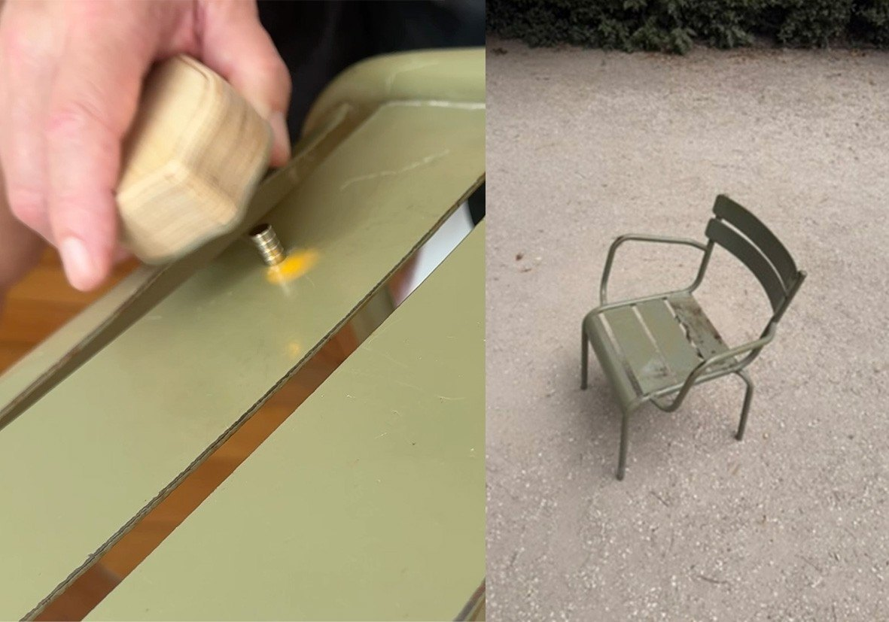
39
076 Urban Songline (Chaises du Temps Réel) , 2026Latitude: 48.849093° N – 48.844044° N / Longitude: 2.338981° E – 2.332683° E
Original Sénat chair, earth magnets, resonator, sound
The chair is played as an instrument, releasing its memory as a score. Chaise prêtée par le jardin du Luxembourg-Sénat.
€3,500
Enquire →
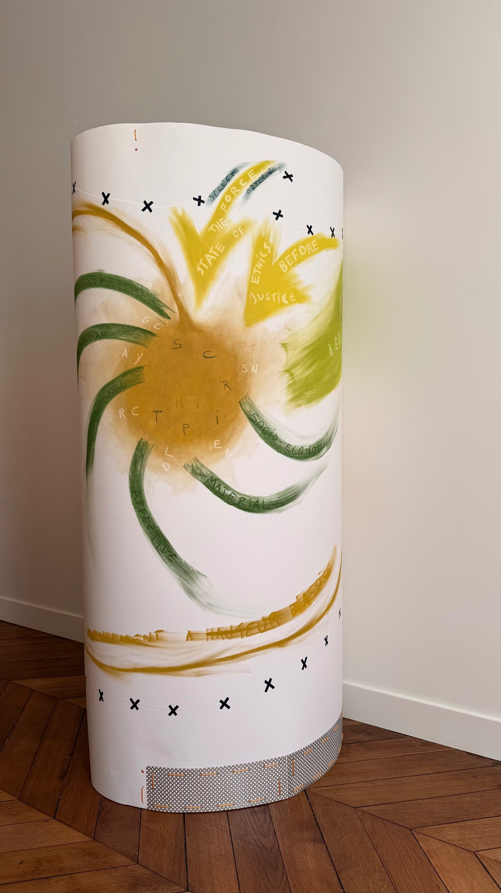
40
076 Urban Songline (Chaises du Temps Réel) — Manifesto-Score , 2026Latitude: 48.849093° N – 48.844044° N / Longitude: 2.338981° E – 2.332683° E
Pastel on paper, washi tape, metal mesh, nylon cord
€4,200
Enquire →
Enquiries
Prices in euros, excluding shipping; all works subject to availability. Bronze editions of Jimmy Gardner's sculptures are cast to order by lost-wax. Artists receive 100% of the proceeds of their sales.jimmy@newtothewall.com
Handout (PDF) ↓